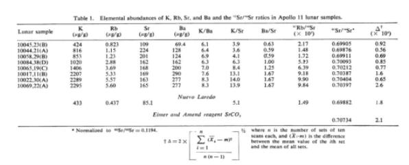
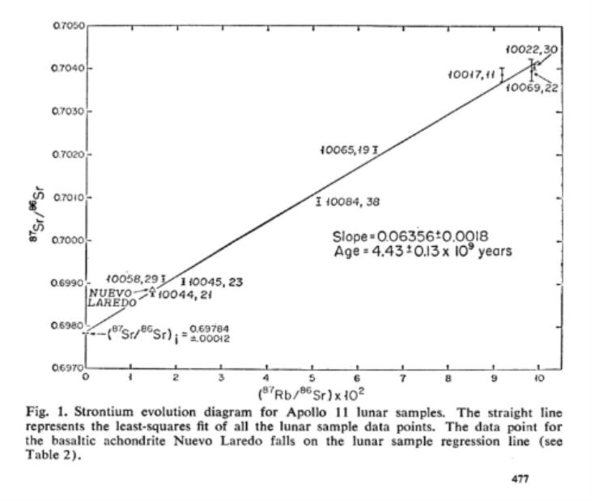
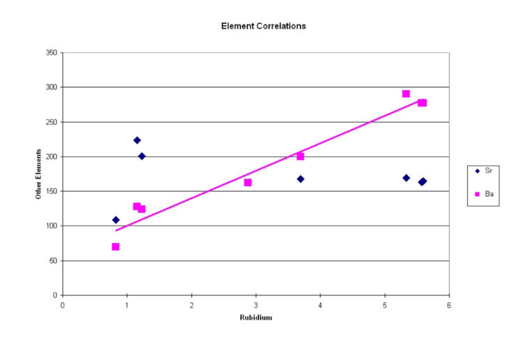
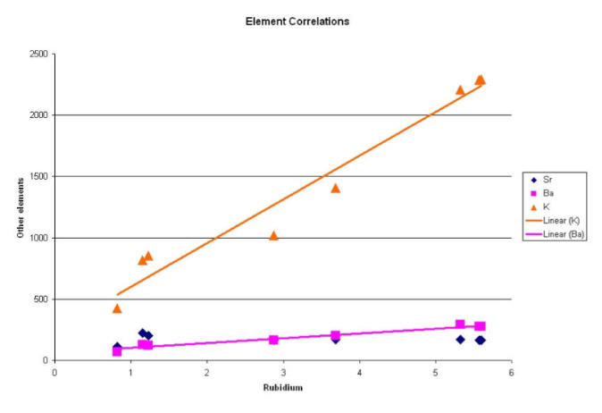

). Most people, however, don't know how the method actually works. They just accept the results on face value. Here's a little tutorial about how ages are calculated using isochrons.
). Most people, however, don't know how the method actually works. They just accept the results on face value. Here's a little tutorial about how ages are calculated using isochrons.| Feature Article - May 2008 |
| by Do-While Jones |
Isochrons are graphs of the amounts of various minerals found in rocks. These graphs supposedly tell how old the rock is. This month we will look at how the method is supposed to work, and see why it doesn't.
The isochron method is considered by some to be the most accurate rock dating method (when it confirms evolutionary prejudice ). Most people, however, don't know how the method actually works. They just accept the results on face value. Here's a little tutorial about how ages are calculated using isochrons.
Rocks are made up of minerals. Minerals are specific chemical combinations of atoms. For example, table salt is a mineral called sodium chloride. The chemical formula is NaCl, which means it is made of one sodium (a.k.a. Natrium) atom, and one Chlorine atom.
Some atoms come in different varieties, called isotopes. You may have heard of uranium 235 and uranium 238. These are two variations of uranium which have slightly different weights. The numbers are measures of how much they weigh.
An atomic mass spectrometer is a machine that takes powdered rock and divides it into isotopes. It can tell you how much gold, or iron, or silver, or whatever is in a rock.
The idea of "how much" can be expressed two different ways. If we are out prospecting and find a rock that we think might have gold in it, we can take a sample to an assayer to find out "how much" there is. The answer might be 0.1 gram. That is an absolute amount. But, is that a lot of gold? It depends upon how heavy the sample is that we gave to the assayer. If the rock only weighs 0.15 grams, then the rock is 2/3 gold. But if the rock is 3,000 pounds, then 0.1 gram is practically nothing. The second notion of "how much" is based on percentage. Percentage is independent of sample size, so it is often more useful.
Atomic mass spectrometers tend to give results as ratios of one isotope to another. This is effectively a percentage. Dividing the amounts of other isotopes by a common isotope effectively normalizes the sample, making the size of the sample irrelevant.
Remember that isotopes are differently weighted variations of atoms (elements). Sometimes the weight matters, and sometimes it doesn't. When it matters, we talk about the ratios of isotopes. When it doesn't matter, we talk about the ratios of elements.
So, with that background, let's look at some actual data. The data we are going to look at is data from moon rocks brought back by the Apollo 11 astronauts. There are four reasons for using this particular data. First, this isn't data published by "crackpot creationists." It is data that was published by "real" scientists. Second, it isn't data about some insignificant rocks that was only published in an obscure geology journal that nobody ever heard of, and therefore can't be easily verified. Third, every geologist in the world wanted to analyze these rocks, so NASA carefully screened all the requests and let only the most qualified scientists take the measurements. Every precaution was taken to avoid contamination. The results were carefully peer-reviewed and presented at the Apollo 11 Lunar Science Conference, and the complete proceedings (335 pages) were published in the January 30, 1970, issue of Science (the most prestigious scientific publication in the United States). Fourth, we are going to write more about the findings of the Apollo 11 Lunar Science Conference next month, so we are laying some groundwork here.
Here is the raw data, expressed in tabular and plotted form, and some of the official explanation of the data from the Lunar Conference.
 |
|---|
|
The Rb-Sr [rubidium-strontium] isotopic data for the lunar samples are shown in Table 1. The total range observed in the 87Sr/86Sr ratio is 0.8 percent. From these data, we have attempted to determine the solidification ages of the lunar rocks. The data have been grouped in different ways on the basis of assumptions regarding their genesis and internal relationships and checked for the requirements of isochronism, that is, a uniform initial 87Sr/86Sr ratio and chemical closure for the same time. If these assumptions are satisfied, we should obtain a linear relationship between the present values of 87Sr/86Sr and 87Rb/86Sr ratios. From the best-fit lines corresponding to various groupings, both the initial 87Sr/86Sr ratio and the age can be obtained. The initial 87Sr/86Sr values, the slopes of the best-fit lines, and the ages thus obtained for various groups of lunar rocks are shown in Table 2. Although there is no a priori reason to group the data, this was deliberately done to search for any differences between the initial Sr-isotopic compositions and ages of the various types of rocks. All the lunar samples studied here can fit a linear relationship on the Sr-evolution diagram (Fig. 1) with an age of 4.43 ± 0.13 x 109 years and an initial 87Sr/86Sr ratio [(87Sr/86Sr)I] of 0.69784 ± 0.00012 (Table 2). 1 |
Table 1 tells how much of various elements and isotopes were found in the moon rocks. The eight moon rocks of interest are listed in the first eight lines of Table 1. The moon rocks were numbered 10045, 10044, 10058, etc. They were classified as Type A, Type B, etc. in another article. Those classifications are irrelevant for our discussion.
In the various columns of Table 1 they listed the number of micrograms of each element per gram of rock. The first column tells how much potassium (K) there was in each sample. The second column tells the amount of rubidium (Rb). The third and fourth columns tell the amount of strontium (Sr) and barium (Ba). The next three columns are simply ratios of data from the first four columns. The next two columns are isotope ratios. The final column is a measure of uncertainty.
 |
|---|
Figure 1 is their plot of isotope ratios. They found the slope of that line, and inferred an age (4.43 billion years) from the slope of the line.
Before we consider their assumptions and the conclusions they drew from their graph, let's look at something they did not plot.
 |
|---|
On the X (horizontal) axis we have plotted the amount of rubidium in each moon rock sample. The black diamonds show, on the Y (vertical) axis how much strontium is in that sample. The pink squares show how much barium is in that rock. Notice that the pink squares tend to fall on a line that goes from the lower left corner to the upper right corner, but the black diamonds don't.
The pink squares show that there is a correlation between rubidium and barium in these moon rocks. If the astronauts had brought back a moon rock with 2 units of rubidium, it is a pretty good bet that it would have about 150 units of barium. If they had brought back a moon rock with 5 units of rubidium, there probably would have been about 250 units of barium. Knowing how much rubidium is in the rock helps us guess how much barium there is likely to be.
The black squares show there is no correlation between rubidium and strontium. Knowing the amount of rubidium in the rock doesn't tell us anything about how much strontium is in it.
Now, let's plot that graph again, and include the data about potassium. The potassium data points are shown as orange triangles.
 |
|---|
Notice that we had to change the scale on the vertical axis because there is much more potassium than strontium or barium. Suppose you used a ruler to draw a straight line through the orange triangles (potassium) and another line drawn through the pink squares (barium). The slope of a line drawn through the potassium data points is much steeper than the slope of the line drawn through the barium data points. But some of the orange triangles would be farther away from their line than the pink squares are from their line.
The amount of difference between the data points and the best line you could draw through them is a measure of how well the data is correlated. The slope of the best line you could draw through the data points is a measure of how strong the correlation is. So, there is a correlation of rubidium with barium, but there is a stronger correlation between rubidium and potassium. There isn't any correlation to speak of between rubidium and strontium.
One reason for showing you these graphs is to explain the concept of correlation. A more important reason is to make the distinction between the facts shown on the graph and speculative inferences drawn from those facts.
It is a fact that the more rubidium there is in a moon rock (taken from the Sea of Tranquillity), the more potassium there is. But we can't say for sure why there is more potassium.
We don't know what process made the elements in the moon rocks; but whatever the process was, it put more potassium in the rocks whenever it put more rubidium in the rocks.
The existence of the correlation between potassium and rubidium is factual, but speculation about why there is a correlation is nothing more than speculation. We can't emphasize this too much. The data shows there is a relationship between the amount of rubidium and the amount of potassium in a moon rock, but it doesn't tell us anything at all about why that relationship exists.
Now, with that background, let's look at rubidium-strontium data that was graphed in Figure 1. The amount of rubidium 87 isotope is plotted on the horizontal axis. The amount of strontium 87 isotope is plotted on the vertical axis. They drew a sloping line through the data points using the "least squares" method. This is the standard way to do "linear regression." In other words, there is a well-known, widely accepted mathematical way to define the "best" straight-line fit to a set of data points. The "best" line is the one in which the sum of the squares of all the differences between the data points and the line is the smallest. The data points are properly plotted and the line showing the correlation between the data points is correctly drawn.
But there is something you might not have noticed about the graph. The Y axis doesn't start at 0. It starts at 0.6970. The top of the graph is 0.7050. The amount of rubidium ranges from 2 to 10, but the amount of strontium is never much different from 0.7. So, there isn't a very strong correlation. The line would be essentially flat at 0.7 if the vertical axis were scaled 0 to 1.
In the graphs we plotted, knowing the amount of rubidium helped us greatly guess how much barium and potassium is in the rock. Knowing the amount of rubidium doesn't really tell us much about the amount of all the isotopes of strontium. In particular, the amount of the strontium 87 isotope is always about 0.7 regardless of how much rubidium 87 there is.
The second significant thing is that some of the error bars don't touch the best-fit line. The error bars are those short line segments going up and down from the actual data points. They represent the amount of uncertainty in the data due to experimental error. It would be more compelling if the best-fit line went through all of the error bars; but the fact that it doesn't isn't a deal-breaker.
But what does this all have to do with the age of the moon rocks? It all depends upon an assumption about why the line is sloped (slight as that slope might be).
How did the line acquire that slope? Rubidium 87 decays into strontium 87 very, very slowly. If we were to analyze those very same rocks billions of years from now, the amounts of rubidium 87 would be slightly less, and the amounts of strontium 87 would be slightly higher. Therefore, billions of years from now, the slope of that line will be just a little bit steeper.
Remember,
|
The data have been grouped in different ways on the basis of assumptions regarding their genesis and internal relationships and checked for the requirements of isochronism, that is, a uniform initial 87Sr/86Sr ratio and chemical closure for the same time. 2 |
In other words, the assumption is that when the moon rocks solidified ("chemical closure"), the amount of strontium 87 (the "uniform initial 87Sr/86Sr ratio") was 0.69784 ± 0.00012 regardless of how much rubidium 87 there was in the rock. In other words, they assume the line was perfectly flat when the rock solidified. They assume that the slope of the line was produced by 4.43 billion years of decay (they actually used the word "evolution") of rubidium into strontium.
There is no valid basis for that assumption. We know that rubidium does not decay (or even evolve ) into barium or potassium. Since the slopes of the rubidium-barium and rubidium-potassium lines are not the result of radioactive decay, why should one assume that the slope of the rubidium-strontium line is?
The data tells us that some moon rocks have more rubidium in them than other moon rocks do. The data tells us that some moon rocks have more potassium in them than other moon rocks do. The data doesn't tell us why some rocks are richer in these minerals than other ones are. It just tells us that they are.
The data also tells us that the rocks that are richer in rubidium are richer in potassium. The data doesn't tell us why that is true--it simply tells us that it is true. It certainly doesn't tell us that rubidium decayed into potassium or barium.
The data tells us that the rocks that are richer in rubidium 87 are richer in strontium 87. It doesn't tell us why. There is no way to know how much rubidium 87 and strontium 87 were in the rocks to begin with. Therefore, there is no way to tell how much (if any) of the strontium 87 came from the decay of rubidium 87.
The isochron dating method rests entirely on the unsubstantiated assumption that the amount of strontium 87 was entirely independent of the amount of rubidium 87 when the moon rocks solidified. We know that the amount of potassium wasn't independent of the amount of rubidium when the moon rocks solidified. We know that the amount of barium wasn't independent of the amount of rubidium when the moon rocks solidified. Why should we assume that the strontium 87 was independent? What makes strontium 87 special?
If the isochron method is so reliable and accurate, shouldn't it give consistent results? Shouldn't the other "reliable" methods of dating rocks give the same ages? It seems like they should. So, let's look at the other dates given at the Apollo 11 Lunar Conference for these same moon rocks. But let's do that next month.
| Quick links to | |
|---|---|
| Science Against Evolution Home Page |
Back issues of Disclosure (our newsletter) |
| Web Site of the Month |
Topical Index |
Footnotes:
1
Science, 30 January 1970, "Rubidium-Strontium and Elemental and Isotopic Abundances of Some Trace Elements in Lunar Samples", pages 476-479, https://www.science.org/doi/10.1126/science.167.3918.476
2
ibid.